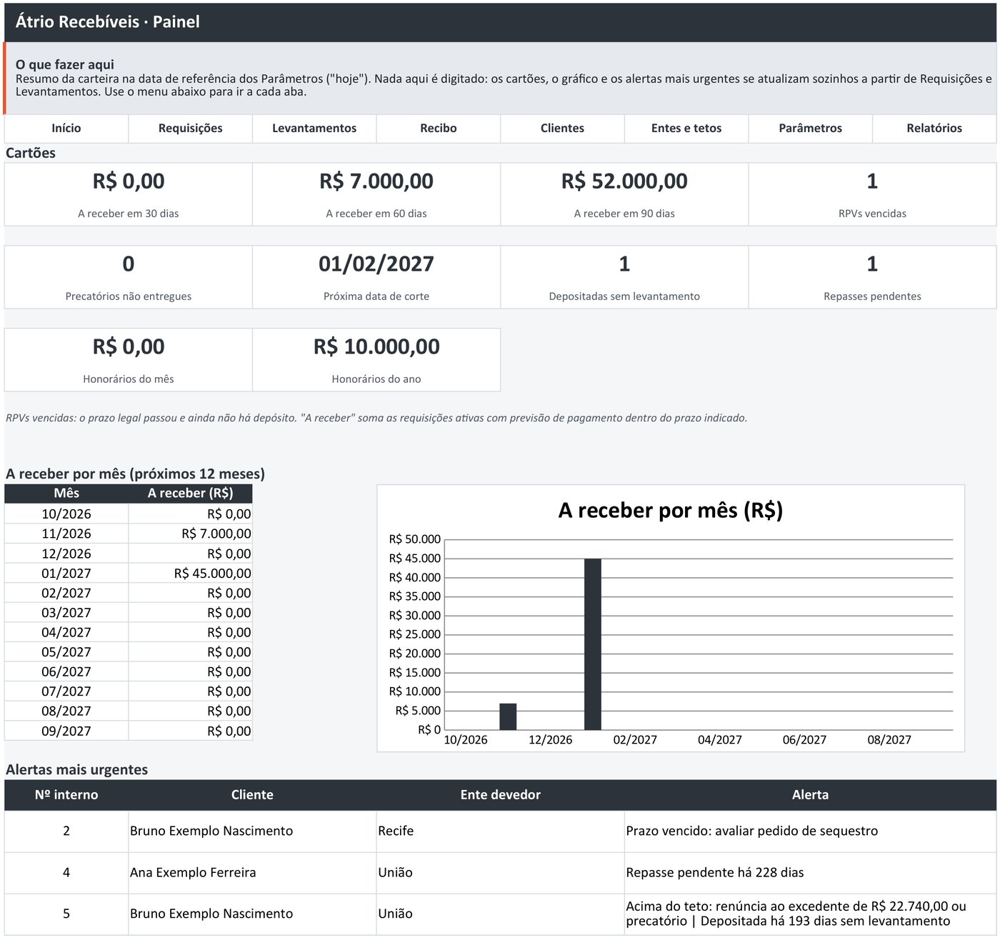
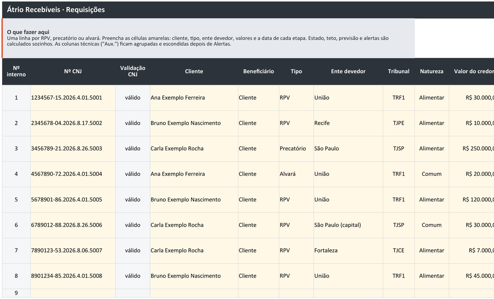
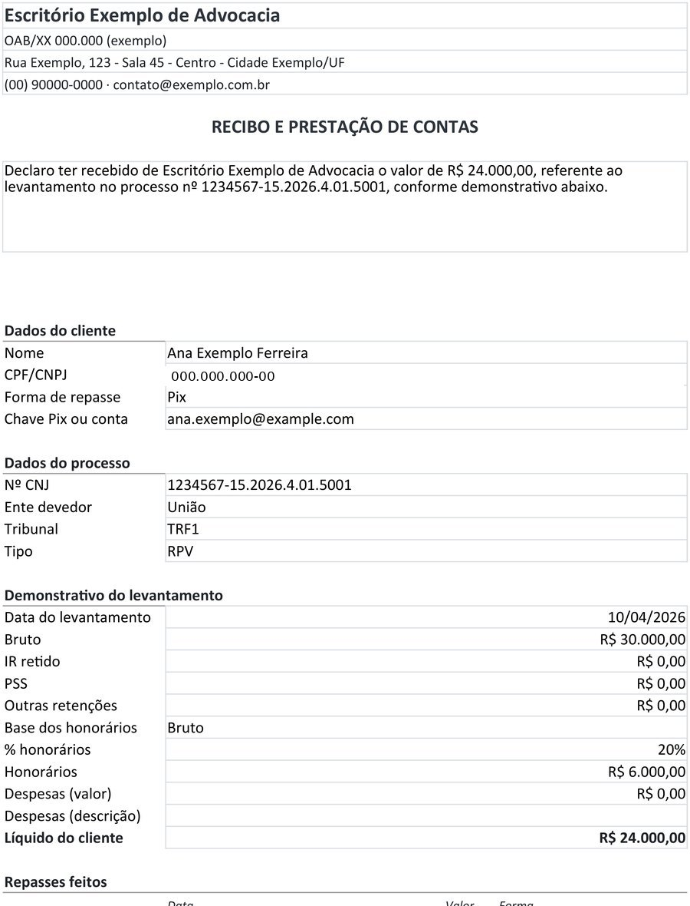
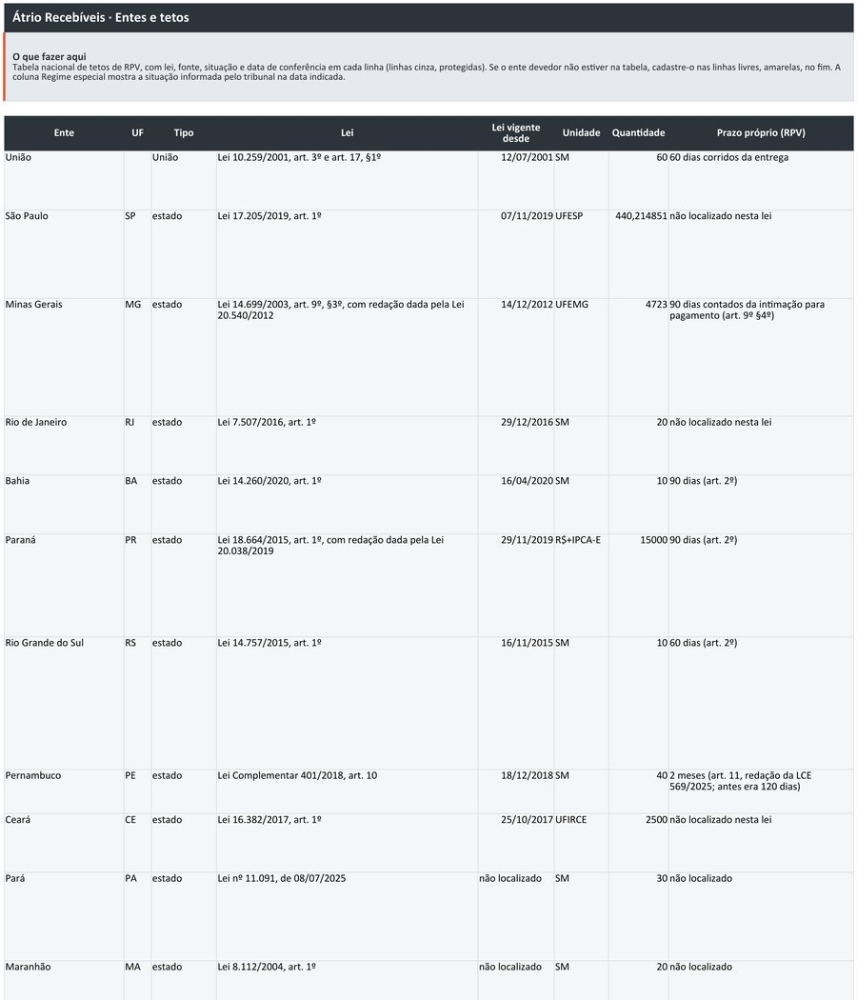

"Qual é o teto desse ente?"
A tabela de tetos já vem dentro da planilha, com a lei, a situação da conferência e a regra de transição pela data do trânsito em julgado.
Controle de RPV, precatório e alvará do escritório numa planilha de Excel ou Google Sheets: prazo de pagamento, teto de cada ente, superpreferência, honorários, repasse ao cliente e recibo.
R$ 97
pagamento único, preço de lançamento até 31/12/2026, com a Edição 2027 incluída sem custo. A partir de janeiro de 2027, R$ 147.
Comprar na Kiwify Comprar na Hotmart
Pagamento e entrega pela Kiwify ou pela Hotmart. 7 dias para desistir, com reembolso pela plataforma.

A tabela de tetos já vem dentro da planilha, com a lei, a situação da conferência e a regra de transição pela data do trânsito em julgado.
O prazo legal é calculado por tipo de requisição, e o Painel avisa a RPV vencida com o que fazer.
Honorários sobre o bruto ou o líquido, destacados e sucumbência; repasse ao cliente em até 3 parcelas, com o saldo calculado.
O recibo e a prestação de contas saem prontos para imprimir e assinar, com o demonstrativo do levantamento.
Imagens reais da planilha, com dados de exemplo.



Não. Você só digita nos campos amarelos; o resto é calculado sozinho. As fórmulas ficam protegidas (sem senha), para não serem apagadas sem querer.
Sim. Envie o arquivo .xlsx ao Google Drive e abra com o Google Sheets: as fórmulas funcionam. Os botões da aba Início e o menu do Painel não abrem a aba no Sheets; use as abas na parte de baixo da tela. A proteção das células também não vem junto: se quiser essa trava, configure "Intervalos protegidos" por lá.
Abre e mostra os dados nos aplicativos do Excel e do Google Sheets, mas é mais confortável usar no computador, pela quantidade de colunas.
Os valores novos (salário mínimo, tetos, unidades fiscais) chegam na edição do ano seguinte. Para um ente que não está na tabela, use as linhas livres da aba Entes e tetos.
A compra dá direito à edição vigente. Quem compra até 31/12/2026 recebe também a Edição 2027, publicada em janeiro de 2027, sem custo. Erro de cálculo comunicado ao suporte é corrigido sem custo na edição vigente. Não há cobrança automática.
Pela área de membros da plataforma em que você comprar (Kiwify ou Hotmart), liberada depois da confirmação do pagamento.
Você tem 7 dias para desistir e pedir o reembolso pela própria plataforma (Código de Defesa do Consumidor, art. 49).
Não. Ela organiza prazos e cálculos a partir do que você digita; a conferência final do processo continua sendo do advogado responsável.
Átrio Recebíveis · Edição 2026
Pagamento único. Você escolhe a plataforma.